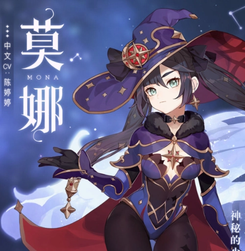

莫娜

提瓦特大陆上众生奔忙，行商运货，骑士巡街，农人耕作。但如果问莫娜，神秘高傲的占星术士在忙些什么的话，答案大概会是，忙着计算一笔名为“生活”的账。尽管她本人—定会否认“穷”这个说法，作出如下辩解：
“太过漂亮的景象会把最简朴的真实藏起来。太过美味的食物会让人忘记这东西有多少营养。简朴的生活是为了看破世界的真实。”清贫的生活只是通往真实的修行，这是莫娜本人一直坚持的说辞。提瓦特大陆上众生奔忙，连神秘的占星术士也不例外。哦，不过吟游诗人好像真的什么都不做。
- 慕风蘑菇：蒙德，急冻树上方秘境，朝西方向走，与NPC[克罗丽丝]对话购买。1500摩拉/个，三天刷新。（NPC只有白天出现）
- [抗争]系列天赋材料：忘却之峡（稻妻城左侧小岛上）。每周二/五/日开放。
- 北风之环（北风的王狼挑战奖励）：安德留斯[北风的狼王]周本掉落。
- 净水之心（纯水精灵掉落）：净水之心通过击败纯水精灵掉落获取。
- 因果点破：进行至多四段的水花攻击，造成水元素伤害。
- 水中幻愿：聚集水花汇成命运的虚影。
- 虚实流动：在虚实流动状态下，莫娜可以在水面上高速移动。
芭芭拉

芭芭拉是西风教会的祈礼牧师，同时也是蒙德城的闪耀偶像。“只要看到芭芭拉，心情就能变好。”——蒙德城里流传着这样的说法。
实际上，不只是心情，伤口或者身体不适也能一起治愈。人们知道，芭芭拉可以通过水元素的“神之眼”，释放奇妙的魔法。但在芭芭拉心中，最神奇的魔法只有“切实的努力”而已。
- 角色20级突破材料：涤净青金碎屑*1、慕风蘑菇*3、导能绘卷*3
- 角色40级突破材料：涤净青金断片*3、净水之心*2、慕风蘑菇*10、导能绘卷*15
- 角色50级突破材料：涤净青金断片*6、净水之心*4、慕风蘑菇*20、封魔绘卷*12
- 角色60级突破材料：涤净青金块*3、净水之心*8、慕风蘑菇*30、封魔绘卷*18
- 角色70级突破材料：涤净青金块*6、净水之心*12、慕风蘑菇*45、禁咒绘卷*12
- 角色80级突破材料：涤净青金*6、净水之心*20、慕风蘑菇*60、禁咒绘卷*24
- 水之浅唱:进行至多四段的水花攻击，造成水元素伤害。
- 演唱，开始:唤出歌声般跃动的水珠，形成歌声之环，对周围的敌人造成水元素伤害，并施加潮湿状态。
- 歌声之环:芭芭拉的普通攻击命中时，队伍中自己的角色，以及附近的友方角色恢复生命值，回复量受益于芭芭拉的生命值上限;
- 闪耀奇迹:为附近的友方角色与队伍中自己的角色恢复大量生命值，回复量受益于芭芭拉的生命值上限。
- 光辉的季节:角色在演唱，开始♪的歌声之环中时，体力消耗降低12％。
夜兰
夜兰不总是独自行动。许久以前，她身边也有肝胆相照的同僚。有那么一小部分人，出于各种原因，选择与夜兰一同潜入黑暗。但在那时，夜兰还没有完全认清——诡计、诱饵、陷阱…光靠她擅长的这些事，未必就能应对一切。自制力强的敌人不会吃下诱饵，狡诈奸猾的敌人不会落入阴谋，实力骇人的敌人不会为陷阱所困。因而，他们付出代价。相继有人消失在前行的路上，虽说选择这条路的人早已有此觉悟…但在某次深渊调查任务结束，夜兰身边再无一人时，她终于还是停下了，长久地停步
- 涤净青金：位于无妄坡附近，打纯水精灵掉落。日常委托任务也可以获得。如果实在不够，在合成台处用其他的材料转换。
- 符纹之齿：位于层岩巨渊地下矿区，打BOSS【遗迹巨蛇】掉落
- 蔚官的徽记：打先遣队怪物掉落，分布在蒙德、璃月和稻妻地区，如下图，而债务处理人和雷莹术士有少量掉落。
- 星螺：分布在璃月地区。如下图，一共可以采集77个，2天刷新一次。
- 鎏金之鳞：位于璃月地区 ，打周副本BOSS「若陀龙王」掉落，每个星期打一次。
- 潜形隐曜弓：夜兰进行四段弓箭攻击,长按蓄力造成水元素伤害,脱离战斗5秒后可以获得被动破局:根据生命值百分比打出破局矢造成范围水元素伤害
- 萦络纵命索：该技能分为点按和长按两个方式 ,点按可以立马对前面的人造成害,长按你可以用来跑图或者攻击更多敌人
- 渊图玲珑骰:以生命值百分比为倍率先造成一段范围伤害 ,每秒根据角色的攻击造成一次协助攻击,每次协助攻击三段伤害,是夜兰的主要输出手段